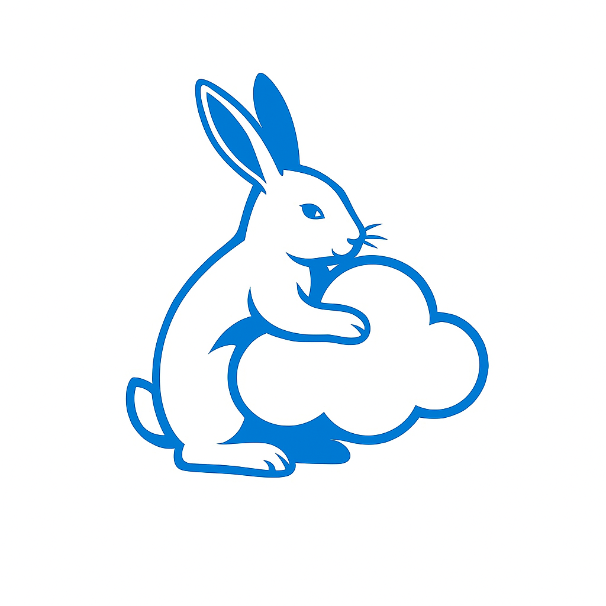

Automatiza hoy
Recupera Siempre
Automatiza respaldos de archivos importantes
y permite restaurarlos
Respaldo
No dejes tu trabajo al azar. Con nuestros respaldos, tus archivos estarán protegidos siempre.
Restaurar
Recupera cualquier archivo en segundos, un clic y todo vuelve a estar como antes.
Historial
Cada versión de tu archivo queda guardada. Recupera exactamente lo que necesitas.
1
Ejecuta el script

Selecciona una operacion
3
Obten el resultado